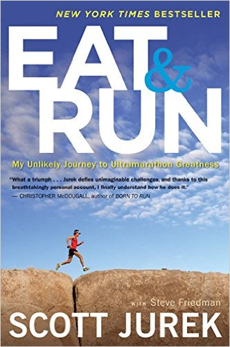

- The title: "Eat and Rnu"
"In Eat and Run, Scott Jurek opens up about his life and career—as an elite athlete and a vegan—and inspires runners at every level. From his Midwestern childhood hunting, fishing, and cooking for his meat-and-potatoes family, to his early beginnings in running (he hated it), to his slow transition to ultrarunning and veganism, to his world-spanning, record-breaking races, Scott’s story shows the power of an iron will and blows apart all the stereotypes of what athletes should eat to fuel optimal performance. Chock-full of incredible, on-the-brink stories of endurance and competition, fascinating science, and accessible practical advice—including his own favorite plant-based recipes—Eat and Run will motivate everyone to “go the distance,” whether that means getting out for that first run, expanding your food horizons, or simply exploring the limits of your own potential."
- The auther:" Scott Jurek" , "Steve Friedman "
- Language"English"
- Genres :"articles"
"We all lose sometimes. We fail to get what we want. Friends and loved ones leave. We make a decision we regret. We try our hardest and come up short. It's not the losing that defines us. It's how we lose. It's what we do afterward. "
More
- the price "$ 10.50"
>Buy Now